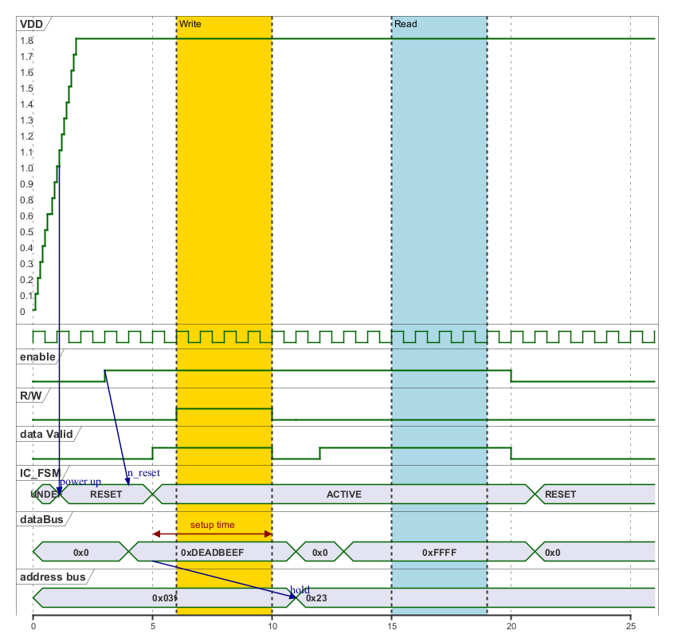

@startuml
'this is a full analog and digital example
'robust is a "simple signal"
'concise is a "state"
'binary is "binary"
robust "VDD" as VDD
scale 5 as 150 pixels
clock clk with period 1
binary "enable" as en
binary "R/W" as rw
binary "data Valid" as dv
concise "IC_FSM" as fsm
concise "IC_FSM" as fsm
concise "dataBus" as db
concise "address bus" as addr
@0
VDD is 0
@0.1
VDD is 0.1
@0.2
VDD is 0.2
@0.3
VDD is 0.3
@0.3
VDD is 0.3
@0.4
VDD is 0.4
@0.5
VDD is 0.5
@0.6
VDD is 0.6
@0.7
VDD is 0.6
@0.7
VDD is 0.7
@0.8
VDD is 0.8
@0.9
VDD is 0.9
@1
VDD is 1.0
@1.1
VDD is 1.1
@1.2
VDD is 1.2
@1.3
VDD is 1.3
@1.4
VDD is 1.4
@1.5
VDD is 1.5
@1.6
VDD is 1.6
@1.7
VDD is 1.7
@1.8
VDD is 1.8
@6 as :write_beg
@10 as :write_end
@15 as :read_beg
@19 as :read_end
@0
fsm is "UNDEF"
en is low
db is "0x0"
addr is "0x03f"
rw is low
dv is 0
@1.1
fsm is "RESET"
VDD@1.1 -> fsm@1.1 : power up
en@3 -> fsm@4 : n_reset
@:write_beg-3
en is high
@:write_beg-1
fsm is "ACTIVE"
@:write_beg-2
db is "0xDEADBEEF"
@:write_beg-1
dv is 1
@:write_beg
rw is high
@:write_end
rw is low
dv is low
@:write_end+1
rw is low
db is "0x0"
addr is "0x23"
@12
dv is high
@13
db is "0xFFFF"
@20
en is low
dv is low
@21
db is "0x0"
fsm is "RESET"
highlight :write_beg to :write_end #Gold:Write
highlight :read_beg to :read_end #lightBlue:Read
db@:write_beg-1 <-> @:write_end : setup time
db@:write_beg-1 -> addr@:write_end+1 : hold
@enduml